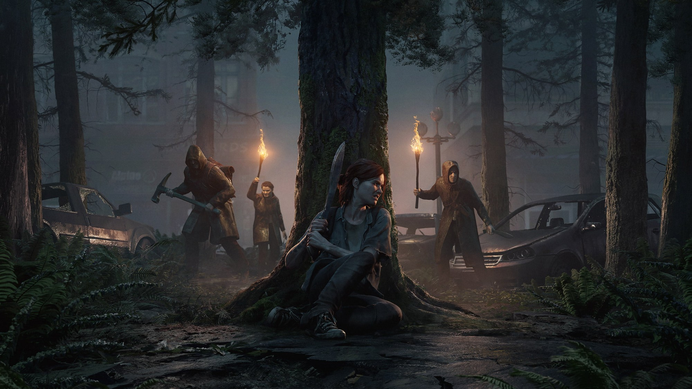
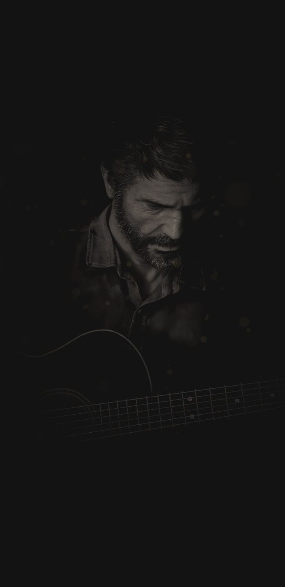
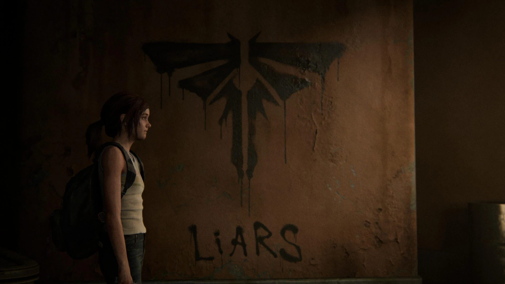
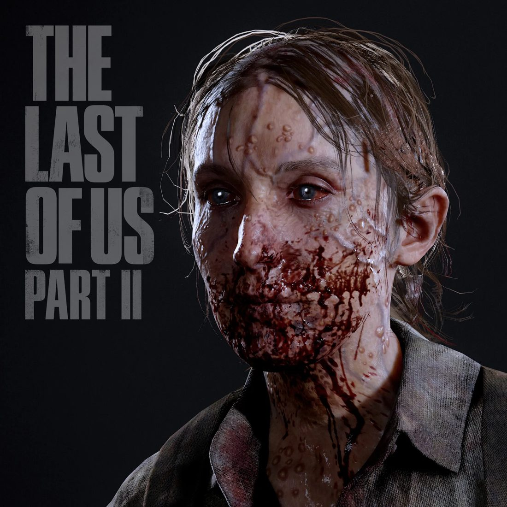
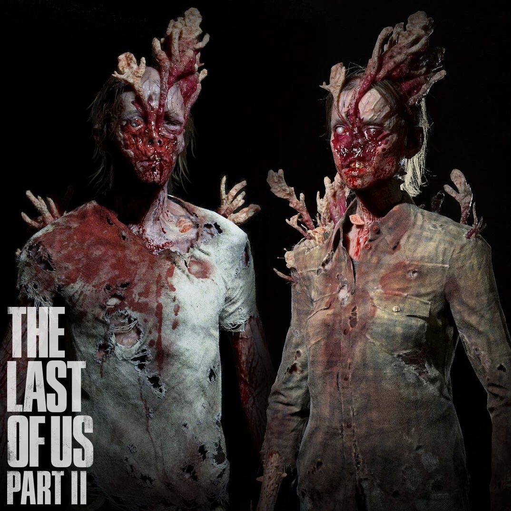
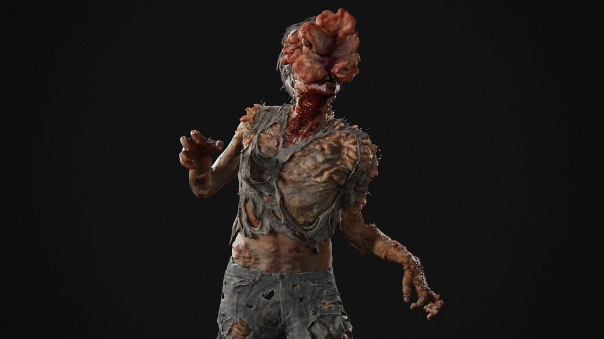
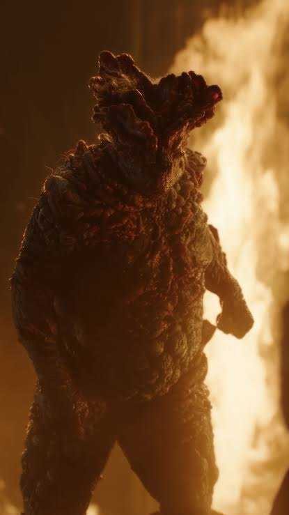
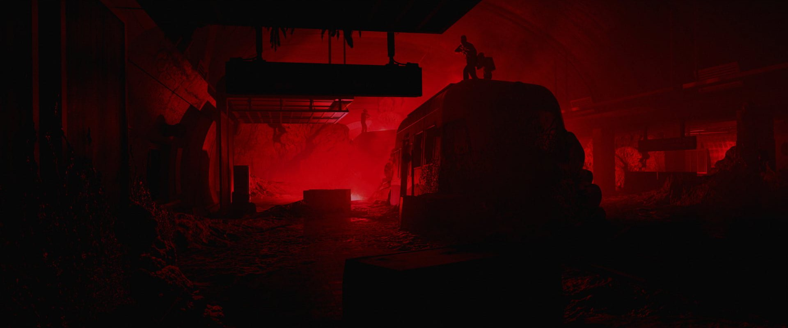

01
Ellie
Protagonista
Aos 19 anos, sobrevivente e imune. Movida por uma sede de justiça que pode custar tudo.

Parte II
01 — História
Ellie e Joel construíram uma vida em Jackson, Wyoming. Mas quando um acontecimento violento destrói essa paz, Ellie parte numa jornada implacável por Seattle em busca de justiça.
“Eu preciso encontrá-los.”
02 — Personagens
Protagonista
Aos 19 anos, sobrevivente e imune. Movida por uma sede de justiça que pode custar tudo.

Figura paterna
Contrabandista endurecido que cruzou o país para proteger Ellie, e carrega um segredo.
Soldado da WLF
Forte, determinada e com seus próprios motivos. Toda história tem dois lados.

03 — Vaga-lumes
“Quando estiver perdido na escuridão, procure a luz.”
04 — Infectados

Até 2 semanas
Ainda parecem humanos, mas perderam o controle. Rápidos e agressivos, costumam atacar em grupo.

2 semanas a 1 ano
O fungo começa a tomar o rosto. Se escondem nas sombras e atacam de emboscada.

Mais de 1 ano
Cegos, com a cabeça coberta pelo fungo. Se guiam pelo som, com estalos de ecolocalização.

Vários anos
Uma armadura de fungo cobre o corpo inteiro. Lento, resistente e lança bolsas de esporos.
05 — Em números
93
Nota no Metacritic (PS4)
7
Prêmios no The Game Awards 2020, incluindo Jogo do Ano
4 milhões
Cópias vendidas nos 3 primeiros dias
Mais de 60
Opções de acessibilidade
